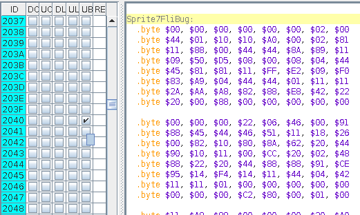
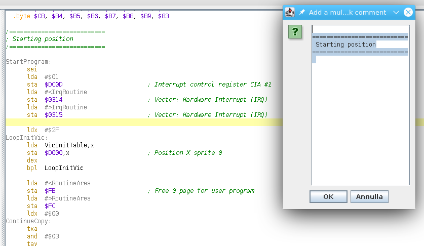
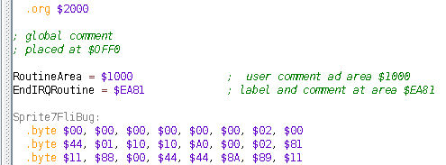
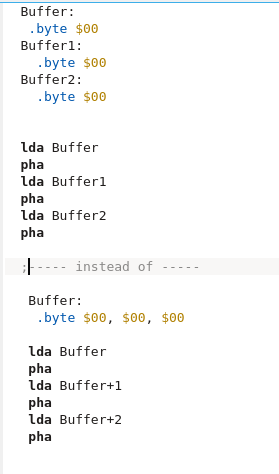
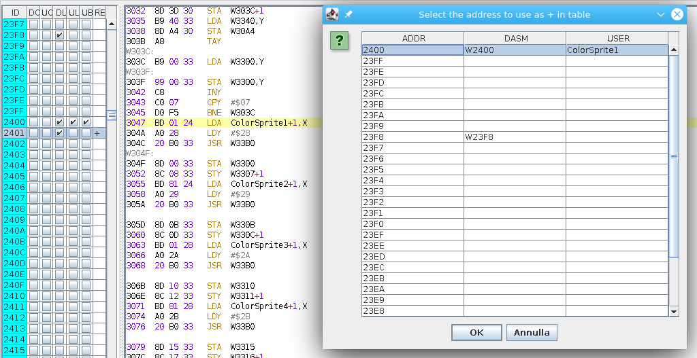
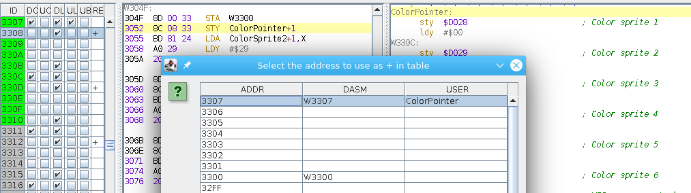
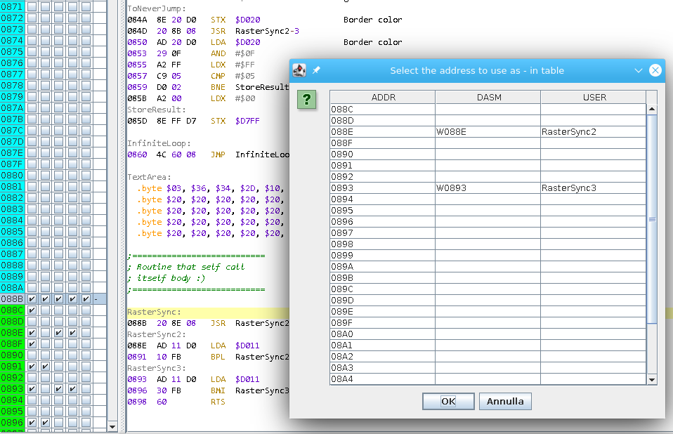
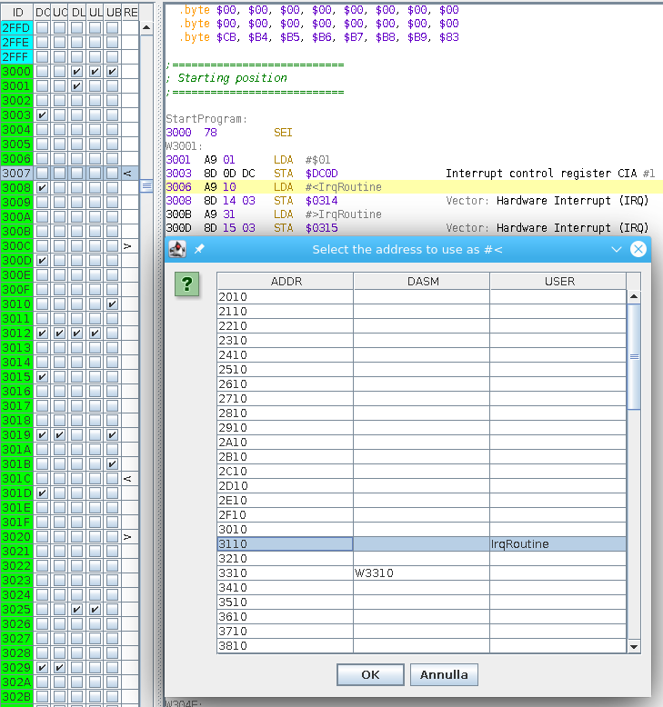
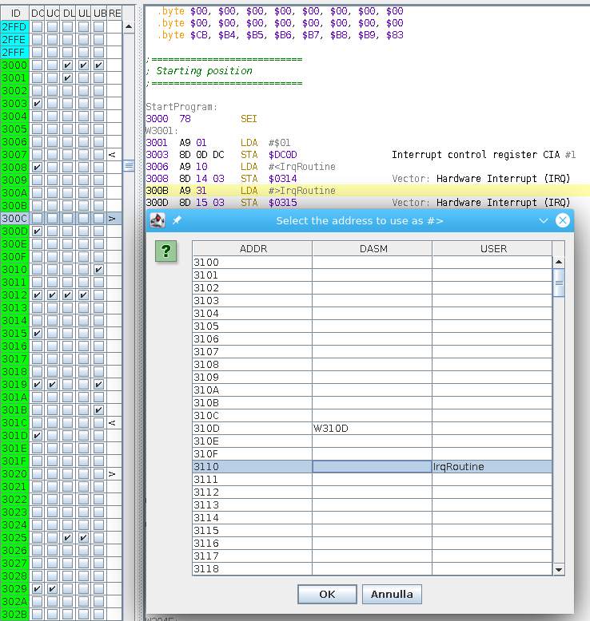

The memory menu is dedicated to the memory area, and so have many voices:
During the disassemble phase, the disassembly engine is able to add some comments to common memory locations (based onto the choosed platform) used by the instruction being executed.
So, for example, if the address of an load/store instruction is $D400, the automatic comment appended to that memory area will be "Voice 1: Frequency control (lo byte)"
You can use those comments to easy search for some text (eg. "Frequency control"), however if you don't need it, you can use this menu function to erase the comments and leave them blank to all the memory location you had delected
Please, note that as soon as you will regenerate the source code, the disassembler will add again that comment, so instead of erasing it, it silenty add a user comment (see Add user comment) that is blank as the rule applied in the engine is that a user comment is always used over a disassembler automatic comment.
Another way to clear the automatic comment is to activate a flag in option that allow you to click in the DC column of memory area for erasing it.
This is a shortcut function to make your comment to that location as blank (e.g you can enter the comment and modify it to be empty, but this is fastest).
The disassembly engine is able to detect all the memory locations used into the program area and label them as "W" + the hex representation of the memory area.
This command will erase that association, but if it is still present into the source it will be recreated at next disassembler source regeneration. So why this function is present?
The answer is simple: at the beginning all memory locations are not marked as code/data, so the engine use them as code (by default in option).
In this phase that could be a data area that if managed as code refers to a given memory location and so that will be labeled.
When you will mark that area as code, the label is still associated, so it could appars when it is utilizated as data.
Another way to clear the automatic label is to activate a flag in option that allow you to click in the DL column of memory area for erasing it.
This function let you add a comment to the selected memory area. The comment is used over a disassembler automatic one and in source appears in the line where there is the code.

Note instead that a comment into the data area will appears only if there is a label and it will be after the label declaration (this let to merge more bytes to one row).
Another way to add/edit a user comment is to activate a flag in option that allow you to click in the UC column of memory area for adding it.
This function is essential for adding the right formatting to the source and appropriate comments to block of code.
The fist usage is for adding blank lines and so separating parts of code or data. The rule is simple: add a space (only one) and a carriage return (and iterate more times as you need).
That char will add a blank line, otherwise you will get a line formatted as comment that it is not good to read.
Here an example with data that are separated every 8 lines (so we have a block of 8x8 area): you can see the comment inside memort address $2040

All other values inserted will be addes as global comment (with the format selected in option), so for example, here a screen that show what it was inserted in comment and what you got:

Another way to add/edit a block comment is to activate a flag in option that allow you to click in the UB column of memory area for adding it.The user can add label to a memory location in data or code area and if there was a disassembly automatic generated one in that position, the user's one will be used instead of the other.
You cannot insert label with less than 5 chars and a option let you specify the max one to use (as some assembler has a limit in his length).
The program will search if the label was already present into the code, so you cannot create duplicates.
As we had seen, disassembler generate labels only for memory locations inside the binary data, but a user can add a label even in the outside area (so as a constant).
This is for mark up external routine (like the KERNAL one) or memory area where to copy some code/data.
The engine of source generation processes the memory outside the binary data first, so block comments and label declaration will appears into the source into the initial area, then it process the internal memory area.
During the constant declaration even user comment are showed:

Another way to add/edit a user label is to activate a flag in option that allow you to click in the UL column of memory area for adding it.This is a fast way to create a label when you are onto an instuction that operated in an word address: instead of goint to that memory location and define the label, you define it by positioning to the memory location of the instruction.
The selected area will be marked as code (so color will be green)
The selected area will be marked as data (so color will be light blue).
Note that you can enhance the classification by selecting the kind in a sub menu. The disassembly engine in that case apply a different decoding of the data.
In some cases, accessing a sequences of byte referring to an initial address (and so label) can improve source clearance, instead of creating one label for every bytes:

Using this function you can create such relation: you need to positionate to the element you want to make point to another, then into the given table you can choose one address (that can have a label, but if it is not present, disassembler engine will create one for it). At this point the label of this address will not be used and instead will be used the one that are associated with the offest for it.
You will see that now the RE column will have a + inside it and the tool tip will gives the address + offset.

You should note that the disassembler engine will create in automatic a such relation in one particular case: where there is a self modified code!
A common way to save raster line or write compact code is to modify the low/high byte of the address of an LDA or STA instruction.
In this case you cannot create a label to that memory location as it is inside the code, so you must refer to it as another (usually labelling where the instruction start) plus an offset:

You can delete a plus relation by simple using the function and selecting only Ok: the program will ask you if you want to delete it. It even useful when disassembler engine create a relation to part that where not marked as code and then you mark as data.
In some cases even having a pointer that refers to a label that is ahead can be usefull, so this create (in the same manner of plus) a minus relation

You will see that now the RE column will have a - inside it and the tool tip will gives the address - offset.

You can delete a minus relation by simple using the function and selecting only Ok: the program will ask you if you want to delete it.
In some cases a immediate value is not a simple byte but it could be the low part of one address.
In you reverse a binary to source you can compile again the file back to binary and it works, but if you relocate the code to another memory position it will not works if the byte where a low part of one pointer.
It is let to your analisys to find such relation but the program will help you.
You need to select the memory location of that byte (that is the next byte after the opcode position for example) and this function will open a table where
all possible addresses in the binary range are equal to that byte as low part:

If you press Ok without select a location and there was already a mapped one, the program will ask you if it has to remove the association.
The RE column will show an < sign in that location and the tool tip will show the value of it
This function is the analoge of the previous but operates with the high part of an address.

As a final note you should know that you cannot mark a memory location as +/- and # at the same time. Only one is tollerated!